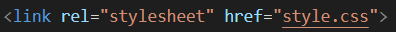

O CSS externo é o terceiro e último modo de criação das folhas de estilo, além de ser o mais indicado, o CSS externo é criado em um documento externo .css, isso garante maior organização do projeto e, tais estilos declarados neste documento pode ser linkado a toda e qualquer página do mesmo site através da tag link:css declarada na área head do documento HTML dessas páginas, essa característica facilita muito em momentos de modificação completa em todo o site, pois basta modificar o documento .css e todas as páginas iram assumir os estilos modificados. Veja o exemplo de CSS externo aplicado a essa página:
